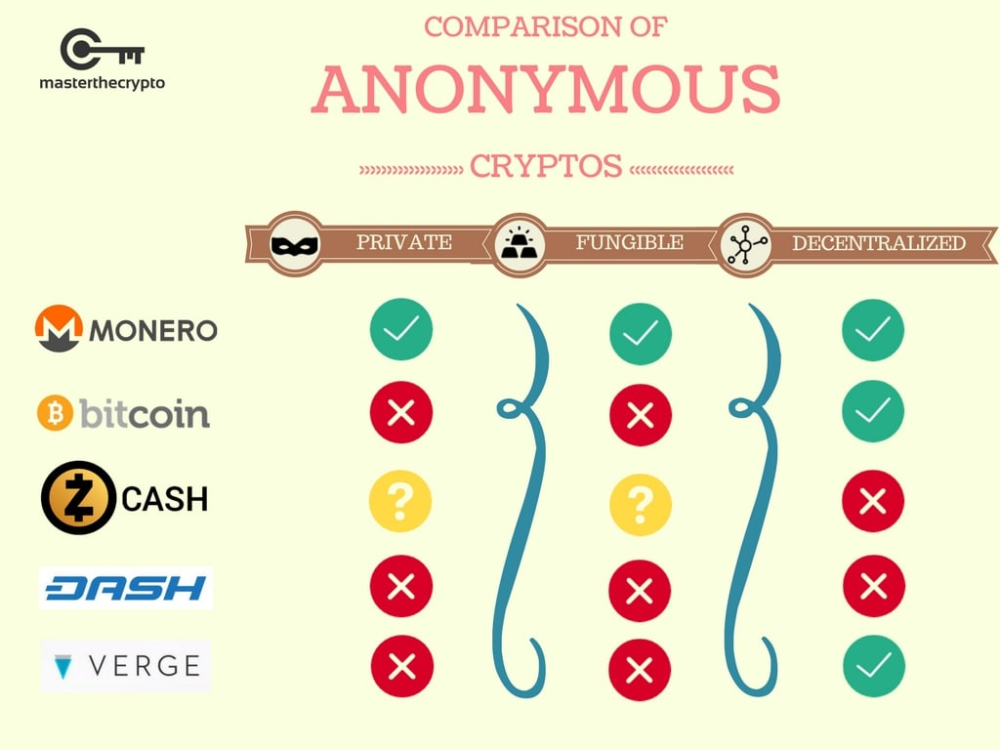

Day15|密碼學初探(8)：零知識證明
沒有隱私的交易
打開Ethereum區塊瀏覽器任意點一個地址，你會發現該錢包地址所有的交易紀錄、收款、匯款的明細通通被攤在陽光下，因為區塊鏈上的帳本人人都可以擁有，舉凡所有的交易、金流全部都公開透明，要了解一個地址的使用情形非常容易：只要點開區塊鏈瀏覽器就可以了。

圖片擷取自：Etherscan
但問題來了，如果這是一間公司的錢包地址，那麼這間公司的所有收入與支出都會攤在對手的眼皮底下，也就是說這間公司的營業額、客單價、消費人數、成本結構等機密資訊都可以輕易地被任何人取得。換算成個人的例子就是：如果你的錢包地址外流，那麼你在何時向誰支付了多少錢、你的戶頭裡還剩多少錢通通可以透過查詢區塊鏈得知。
即使區塊鏈的特色之一就是公開透明、無法竄改，但很明顯的，某些交易或資訊我們還是不希望外界知道。如果不希望外界知道的話，交易明細也必須對礦工保密，但如果連礦工都不知道發起人與收款人是誰、款項多少，那他恐怕也無法幫我們確認餘額是否足夠、是否為本人簽發，這樣不就沒辦法發起交易了嗎？
有沒有辦法在礦工不知道交易細節的狀況下仍然可以讓礦工驗證交易？方法是有的，在沒有任何交易相關資訊的前提下說服礦工這筆交易是合法的，這就是零知識證明。
零知識證明(Zero-Knowledge Proofs)
零知識證明的定義是：不提供任何有關訊息的資料，但仍然可以說服對方該筆訊息是正確的。
最普遍的舉例就是如果前面有一個U字型的通道，通道正中間有一道上鎖的鐵門，那你如何在不出示任何有關鑰匙的資訊下說服驗證者你手上有鑰匙？在這裡有個簡單的方法：不論驗證者要你從A出口或B出口出來你都可以做到，便可以說服驗證者你手上有鑰匙了(即便他連鑰匙或開門的動作都沒看到)！

圖片來源：Wikipedia
零知識證明在區塊鏈上的應用就是在沒有出示任何交易明細的情形下，說服礦工我們有權力動用這筆錢並發起匯款，也就是交易的紀錄就被隱藏，藉此保障了隱私。
同態隱藏(Homomorphic Hidings)
同態隱藏是零知識證明的核心，滿足同態隱藏的函式f(x)有三個定義：
- 透過f(x)很難反推出x
- 不同的x會導致不同的f(x)
- 如果知道f(x)與f(y)的值，就可以算出f(x+y)
為了幫助理解，我們可以想像成x與y是我們需要保密的兩筆資訊，但同時我們又需要向外界證明我們手上有這兩筆資料。因此我們可以透過滿足同態隱藏的函式f傳遞加密過後的f(x)與f(y)給對方，對方可以計算f(x+y)的值來知道我們手上這兩筆資料的和的確是x+y，但又無法確知x與y的值。最後結果就是我們在沒有洩漏x與y的狀況下說服對方認可我們手上x與y的和的確是x+y。

比方說我們現在有兩個數123、321想要隱藏，但又想要說服別人我們手上這兩個數的和是444的話，我們可以透過計算f(123)與f(321)的值給對方後，讓對方透過f(123)與f(321)去計算f(x+y)的值是否為f(444)，如果是的話就可以說服對方了。同時同態隱藏的定義之一便是透過f(x)很難反推x，因此即便我們把f(123)與f(321)給出去，對方也很難反推出123與321的值。另外也因為不同的x會導致不同的f(x)，如果f(x+y)算出來的確是f(444)，就可以肯定x、y的和的確就是444而且沒有其他可能。
但一般的加減乘除無法滿足同態隱藏，因此計算上必須導入取餘數的概念，有興趣看完整推導的話可以參考這裡。
zk-SNARKs
第一個利用零知識證明來做到交易匿蹤性的是ZEC，其中的演算法便是zk-SNARKs，但因為ZEC的新區塊獎勵會有大約20%進入基金會的口袋以支持運作，部分支持者不滿這種行為於是分岔出了ZCL，因此兩者的加密法與架構都是一致的。(順帶一提，我覺得ZEC的行為是很合理的、ZCL倒有點小題大作，研究與開發不可能只靠熱情就能持續，還是要有銀彈支撐)
zk-SNARKs是zero knowledge Succinct Non-interactive ARgument of Knowledge的縮寫(實在有夠長)，這幾個詞分別代表了：Succinct(簡潔，用很少的資料量可以完成整個溝通與驗證)、Non-interactive(只需要很少刺或不需要與原始發送者溝通即可驗證訊息)、ARgument(只在計算上是安全的，如果遇到一個計算能力極強的攻擊者會失效)。
想更了解zk-SNARKs可以參考ZEC的官網，或是中文資料對你比較友善的話也可以參考這裡。
關於零知識證明更多的資料，這裡有一份Berkley的上課講義，有興趣可以參考一下(順便看一下國外頂尖大學是怎麼上課的)。
犯罪者的溫床
保障了交易雙方隱私的同時，也往往成為犯罪者洗錢的溫床，為了避免洗錢也有許多國家希望能夠禁止匿蹤幣在交易所的流通(資料來源)，雖然你可能會有疑問，之前盛行的勒索軟體為什麼不直接勒索匿蹤貨幣就好？原因是匿蹤幣的流通量都比較小眾，相對使用的門檻也高一點，攻擊者如果要受害者去買一個他不知道要怎麼買、怎麼用的東西往往太強人所難......
幾種匿蹤性貨幣
接下來我們簡單介紹一下目前幾種主流的匿蹤貨幣：
ZEC
ZEC最有名的就是它的錢包地址也可以分成兩種：透明地址與隱私地址，因此對應到四種交易種類，因為匿蹤需要耗費更多的運算資源與運算時間，因此ZEC透過手續費的機制讓使用者選擇要透明的交易(手續費較少)或是隱私的交易(手續費較多)，這四種交易形式分別如下圖。

圖片來源：electriccoin
共區分成：
- Public: 匯款、收款雙方都是透明的。
- Shielding: 收款方式保密的。
- Deshielding: 匯款方是保密的。
- Private: 匯款、收款雙方都是保密的。
你可以到ZEC的區塊瀏覽器找找看是否能夠找到我們上面提到的這四種交易(實際上有匿蹤的交易很少，大家為了省手續費基本上都用Public)。
Monero(XMR)
XMR主要使用了三個技術來保障隱私：
- Ring Signature
- Ring Confidential Transactions
- Stealth Address
XMR的有趣之處在於你可以利用私鑰為每一次的收款產出一次性的地址(有點類似劃撥的概念)，透過生成無限多地址的能力，讓外界無從猜測那些地址是屬於那些人的。XMR的區塊瀏覽器在此，對相關技術細節有興趣的話可以參考這裡
Dash
Dash的匿蹤性是靠著把要發送給別人的錢通通參在一起，比方說現在A要匯款給B、C要匯款給D，為了隱私就先把AB要匯的錢混在一起(mix)再從中撥款給C與D，於是外界就區分不出來A或C的款項原本是要匯給誰了！
你可能會有疑問，那如果A與B的金額不一樣，那不就穿幫了嗎。事實不然，Dash會把交易金額切割承夠細夠小的單位，在讓這些小單位的Dash去做混合(mix)，而這些負責混合的節點又稱為master node。順帶一提，你可以到Dash的官方文件上看看怎麼成為Dash的master node，並賺取每年大概6%的Dash，但在成為master node前你要先準備1000 Dash(以現在幣值計算需要快三百萬台幣....)

下面這張表格是各種匿蹤幣的比較，你也可以發現因為Dash有master node的機制，在分類上並不是去中心化(decentralized)的。

圖片來源：masterthecrypto
到目前為止的文章都會放置在Github上。